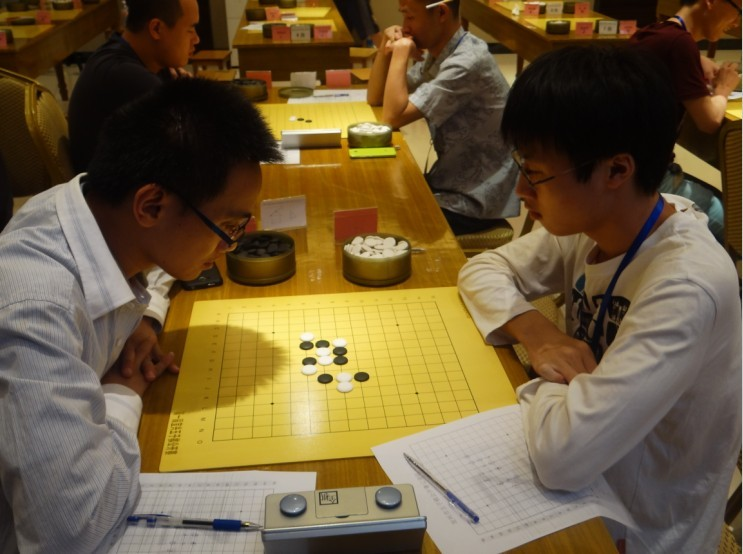

2013首届宜兴公开赛棋评(下)
#1 2013首届宜兴公开赛棋评(下)作者：小丸.net 发表时间：2013-8-19 21:23:28
连胜三轮让我对前景不敢想太多，因为我要面对下一个棋手，肯定是个高手，当对阵表出来后，果不其然，对手是我朝思暮想的全国冠军陈靖，而且更惊奇的是，我开局，就是说，这一个月的心血没有白费，准备还是有用的。我重新打开陈靖的谱，发现了陈靖以往对局松月最多，那么，我开松月是可以直接排除的。接着，我排除了四大平衡局，因为如果光靠算力和速度，我是远远跟不上陈靖的，那么，我能开的开局只剩下残月，残月陈靖肯定会执黑作战，我最强四陈靖会打那几个打点呢？
如上图，黑棋可以打的点是5个，首先排除必胜点A，与接近必胜的点E,最强点B点，按照陈靖的性格一般不会给我留这个打点，第一是因为一个下过几年残月的人一定会对最强防有一定的防守力，后面需要花大量的时间来计算，对于一个需要保存实力拿冠军的棋手来说，减少不必要的计算是必须的，第二，陈靖喜欢新奇的事务，喜欢对新人挑战不同的打点，那么，剩下C,D可选，那么究竟会留那个呢？
我记得有一次比赛，我和王烨林就已经下过D这个点，结果我败了，而且当时我在赛后做了一些拆解，那么，狮子会不会怂恿陈靖还是用这个变化来考我呢？这种想法的确可行，因为在浙江赛和江苏联赛上，我曾经以同一个银月变化两次死在王烨林手上。所以我断定，陈靖必打D点。接着，我把D点后面的变化看了一下。
正确的下法是：
看谱后发现14后面白有一系的强攻，黑棋如果想胜，可能需要在50手之后，让我算这50手我是肯定没能力的。所以后面看得不多，稍微看了一下就直接休息了。
早上5点醒来有点发着烧，现在的感冒药都有催眠的成份，所以不太敢吃。烧了点开水喝，吃了点早餐就上车去往赛场。坐在比赛的凳子上，我忽然觉得心口有点痛，是心理性的那种痛感，感觉会出事。但不具体不知道会在那边出事。
正如我所料，陈靖在我开出残月后交换，给出了CD两个打点，根据准备，拔掉C，走定式。我下得特别快，因为，我想后面必定有大量的计算需要时间，所以陈靖走了以后我非常快的落子。
黑9正常，白10正确的下法是在F10，接着黑棋活三，这时，我的大脑貌似进水了似的，直接在黑棋活三点上活了个三，黑棋防下，接着白12走在了F10上。
陈靖不紧不慢，落下了黑13，这时我心里在想，找死啊，这时候就开始进攻。然后，想了3分钟后，我总感觉是那里下错了，而有一种不祥的预感，不满20手会挂。接着，我对黑的进攻进行了计算，发现，黑必胜了。
问题倒底出来那边呢，原来就是白10活三的问题，给11留了一个连接。
最后草草的防了几手后投降，这一个多月来的准备就断送在这个活三上了，还没有真真展开计算力就直接牺牲在定式上，走出赛场，我心里有点低落，真正才想起了有志对我说的：不要骄傲这四个字的含义。这下，果然出事了。
最后总结，对陈靖的准备在策略、方法上都是完全正确的，但是因为太想赢，结果死得很惨。
与其与在摆定式阶段被弄死，不如和陈靖拼个你死我活了再死，只是聊以自慰罢了。
俗话说，是福不是祸，是祸躲不过，从最后的结果看，这轮输给陈靖，是为我最后两轮全胜典定了基础。一旦我与陈靖战和或者战胜了陈靖，那我后面的对手就并不是3分段打酱油的棋手，而是张轶峰和黑马张纪国。那样的话，我的日子，唉，不敢想了。。。。
被陈靖重新踢回第二集团后，我碰上了同为棋心愉悦畅棋阁的棋手赵杜平，赵杜平开出疏星局，交换后走到了和棋情同一路的变化，11后白12，14应对完全正常。
15开始进攻，16防守貌似有点问题，17眠三做棋后19一子通两路，20是无奈之举，21继续做棋，这时候，对手进入了我的状态，就是我攻他防，我攻他防，他并没有计算自己是不是能攻，在我21后，白棋其实不需要再理我的理，直接自己进攻。而这时赵进入了我的状态，还是选择了最强防守点.

这时，我发现在H线上的四三需要从下面借点东西，看是看到20-8这个2时，我又犹豫了，经过计算，我觉得可以利用下面的反四进行控制，于是出来了23-27的进攻，28必须防上，否则我可以借上面做出一套四三胜，但是防上后，下面有一套简单的VCT杀。32后白棋投降。
获得了这宝贵的一分后，我发现我不但重新回到了第一集团，而且无论接下来什么结果，我都不会跌出前10，就是说，我已经完成了此次来宜兴的打算。但是，这并不满足自己，我觉得，如果最后一轮我努力，或许我能打进前6，或者能打进前3？我真的不敢想了。当对阵表出来以后，我差点就笑了，原来准备与张轶峰或者张纪国狠狠的干一场的，结果，最后一轮他俩遇上了，而我遇上的是我们社团的老大淡月疏星（郭海森），此次他代韦振强出战（在此BS一下缘字杀手临时阵退赛，顺便于BS一下小天）。经过小分计算 ，如果这盘棋我能赢得淡月，我不但能稳拿第四，而且有可能会获得第三名。
以前一直没有和淡月下过实战，网战也基本没有，我还是使用残月横行，但是淡月给我留一下了一个必败了5，一直认为那些必败的5对手不会打，但是这次真的错了，白6正确的下法是在4的斜上方做两个活二，这样简单的棋黑棋无论如何怎么走都难逃被抓禁手的命运，但是这个6，我完全不会，我直接活三后黑防上，白棋挡在中间是错误，但是我考虑到与黑1与这两个黑棋一定会做出点什么东西来。
黑9做出2个活二以后，我似乎看到了黑有胜，可能我存在的佼幸心理，这时我重新计算了我的下法，10防上做2个活三，黑棋必然，这时，我通过计算 ，这盘棋多半是会输了，白棋没有走出正确的变化，都怪我，太开心了，结果现在要杯具，没办法，只能重新计算我的棋，16虽然一子通二路，但是黑棋如果走在12-16中间的话，我就啥都没有了，甚至会输，可是就在这时，淡月选择了实战的17？他要干嘛?
没理他后先走掉正确17的活三点，保命再说，19，21黑棋拿到了先手！天哪 ，我干嘛要这么激进呢？我算了一下右上角，白棋啥也没有。而黑棋在左侧却是黑压压的一片。这棋多半是会输了。然后，黑棋开始在左侧进行大量的进攻，我步步为营，步步最强，结果，这黑棋那里能攻得出来，攻到33后，黑棋失先，白却防守黑棋时留出一大堆素材，34冲掉以后，36活三后下面有一个四三点，而这个白活三后虽然黑棋上面有一个冲四，但是黑棋无论冲那个点白都有一套反。白必胜。
胜出后，我一直在关注张轶峰对张纪国的那盘棋，因为他们的对局结果直接关系到我是否可能进入第三，在最后关头，张纪国胜出一筹，在一个局部杀掉张轶峰的黑棋。这样，我的名次被定格在第四名，前三分别是棋情谢维详，陈靖和张纪国，而对于张轶峰来说，最后一局的结果，不但失掉了前三，还远远的掉在了第五名，另外，复出的无锡棋手盛云峰（棋魂），获得了第六名。
这样的成绩，我在赛前是万万没想到的，也没敢想，我想，至少棋情、 陈靖、张轶峰、吴志琴、盛云峰、张纪国这些棋手我是难以跨不过去的坎，而这些棋手中，我只和棋情、陈靖交过手，其它的人都没碰上，十分失望。
放眼望去，除了对周忠超和赵杜平那盘棋有点质量外，其它基本没什么质量，看看就算了，不要研究。不过，残月拿白基本全胜倒是需要思考的一个问题？
［此帖子已被 小丸.net 在 2013-8-19 21:25:00 编辑过］
［ 黄药师 于 2013-8-19 21:28:46 时奖励此帖[金币加 100 威望加1］
［ 吉小鼠同学于 2013-8-19 21:38:56 时花20金币送鲜花一朵］
［ 吉小鼠同学于 2013-8-19 21:38:56 时花20金币送鲜花一朵］
［ 吉小鼠同学于 2013-8-19 21:38:56 时花20金币送鲜花一朵］
［ 吉小鼠同学于 2013-8-19 21:38:56 时花20金币送鲜花一朵］
［ 吉小鼠同学于 2013-8-19 21:38:56 时花20金币送鲜花一朵］
［ 吉小鼠同学于 2013-8-19 21:38:56 时花20金币送鲜花一朵］
［ 吉小鼠同学于 2013-8-19 21:38:56 时花20金币送鲜花一朵］
［ 吉小鼠同学于 2013-8-19 21:38:56 时花20金币送鲜花一朵］
［ 吉小鼠同学于 2013-8-19 21:38:56 时花20金币送鲜花一朵］
［ 冰雪笑醉同学于 2013-8-19 21:56:57 时花20金币送鲜花一朵］
［ 冰雪笑醉同学于 2013-8-19 21:56:57 时花20金币送鲜花一朵］
［ 冰雪笑醉同学于 2013-8-19 21:56:57 时花20金币送鲜花一朵］
［ 冰雪笑醉同学于 2013-8-19 21:56:57 时花20金币送鲜花一朵］
［ 冰雪笑醉同学于 2013-8-19 21:56:57 时花20金币送鲜花一朵］
［ 天鹜同学于 2013-8-19 22:00:35 时花20金币送鲜花一朵］
［ 天鹜同学于 2013-8-19 22:00:35 时花20金币送鲜花一朵］
［ 天鹜同学于 2013-8-19 22:00:35 时花20金币送鲜花一朵］
［ 天鹜同学于 2013-8-19 22:00:35 时花20金币送鲜花一朵］
［ 天鹜同学于 2013-8-19 22:00:35 时花20金币送鲜花一朵］
［ 天鹜同学于 2013-8-19 22:00:35 时花20金币送鲜花一朵］
［ 幾同学于 2013-8-19 23:28:01 时花20金币送鲜花一朵］
［ 幾同学于 2013-8-19 23:28:01 时花20金币送鲜花一朵］
［ 幾同学于 2013-8-19 23:28:01 时花20金币送鲜花一朵］
［ 暮雨迟同学于 2013-8-20 6:40:08 时花20金币送鲜花一朵］
［ 踵酃同学于 2013-8-21 3:00:58 时花20金币送鲜花一朵］
［ 踵酃同学于 2013-8-21 3:00:58 时花20金币送鲜花一朵］
［ 踵酃同学于 2013-8-21 3:00:58 时花20金币送鲜花一朵］
#2 Re:2013首届宜兴公开赛棋评(下)作者：南京小飞机 发表时间：2013-8-19 21:32:08
收花
#3 Re:2013首届宜兴公开赛棋评(下)作者：一期一会 发表时间：2013-8-19 21:57:38
丸子也太能YY了！什么丛恿他用变化考你，我还没有无聊到那种程度，你也够不上我无聊的等级，不要自我感觉那么良好把自己想象的很VIP，也不想想人家是否是不屑和你下1,2打呵呵，棋谱也证明这种背棋谱的棋难看的根本不值得我关注，直接忽视……#4 Re:2013首届宜兴公开赛棋评(下)作者：冰雪笑醉 发表时间：2013-8-19 21:58:31
丸子动作挺块的，棋评我菜鸟看不懂的
搬个板凳坐等收花！
再次祝贺丸子荣获佳绩！
#5 Re:2013首届宜兴公开赛棋评(下)作者：天鹜 发表时间：2013-8-19 22:11:42
棋评写得不错，棋评外的内容更精彩！
搬个板凳坐等收花！
再次祝贺丸子荣获佳绩！
#6 Re:2013首届宜兴公开赛棋评(下)作者：茗弈小蝴蝶 发表时间：2013-8-19 22:14:11
139从第三轮开就放水了！第六轮人家活三他都不防，他脑进了！#7 re:2013首届宜兴公开赛棋评(下)作者：小丸.net 发表时间：2013-8-19 22:20:13
回三楼狮子：我没有把自己想象的那么VIP,但是我有左右我思想的权力。对陈靖的比赛准备是我最真实的想法，至于你怎么想，那是你的事了。［此帖子已被 小丸.net 在 2013-8-19 22:21:05 编辑过］
#8 Re:2013首届宜兴公开赛棋评(下)作者：幾 发表时间：2013-8-19 22:48:44
耳朵上那根香烟太有感觉了。#9 Re:2013首届宜兴公开赛棋评(下)作者：南京小飞机 发表时间：2013-8-19 22:52:37
 小狮子是我看到的江苏籍五子棋爱好者 第五个说话犀利的人。。。。
小狮子是我看到的江苏籍五子棋爱好者 第五个说话犀利的人。。。。#10 Re:2013首届宜兴公开赛棋评(下)作者：釣鱼岛岛主 发表时间：2013-8-19 23:19:09
我怀疑淡月故意输给你的
#11 re:2013首届宜兴公开赛棋评(下)作者：小丸.net 发表时间：2013-8-19 23:27:57
楼上你想多了#12 Re:2013首届宜兴公开赛棋评(下)作者：釣鱼岛岛主 发表时间：2013-8-19 23:30:19
淡月成了你的牺牲品
#13 Re:2013首届宜兴公开赛棋评(下)作者：掌棋如烟 发表时间：2013-8-20 18:33:41
咦? 我貌似看到了一丢丢卦点哦~~~#14 Re:2013首届宜兴公开赛棋评(下)作者：屏蔽 发表时间：2013-8-20 19:02:06
围观红烧狮子头#15 Re:2013首届宜兴公开赛棋评(下)作者：小帮帮 发表时间：2013-8-20 20:41:31
棋评写得还可以，不过总得来说下得有点乱！
#16 Re:2013首届宜兴公开赛棋评(下)作者：絕版賭徒 发表时间：2013-8-20 22:23:51
无人相，无我相，无众生相，无寿者相.....